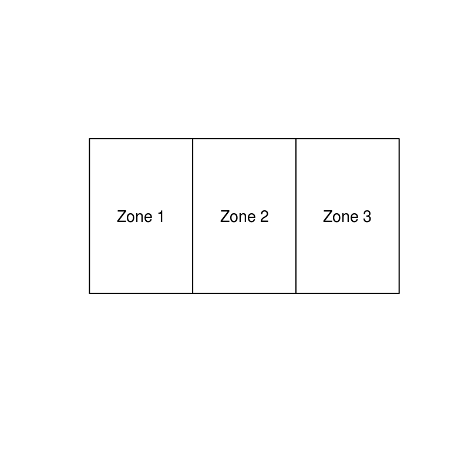

SimpleWorld
To see the link between the methodology introduced later in the book (see Chapter 5) and the various real-world applications, let’s take a look at a simple example of the kind of situation where spatial microsimulation is useful.
We’ll use an imaginary world called SimpleWorld, consisting of only 3 zones that cover the entirety of the SimpleWorld sphere.

SimpleWorld data
This is a small world, containing 12, 10 and 11 individuals of its alien inhabitants in zones 1 to 3, respectively: a planetary population of 33. From the SimpleWorld Census, we know how many young (under 49 space years old) and old (over 50) residents live in each zone, as well their genders: male and female. This information is displayed in the tables below.
| zone | 0-49 yrs | 50 + yrs |
|---|---|---|
| 1 | 8 | 4 |
| 2 | 2 | 8 |
| 3 | 7 | 4 |
| Zone | m | f |
|---|---|---|
| 1 | 6 | 6 |
| 2 | 4 | 6 |
| 3 | 3 | 8 |
Next, imagine a more detailed dataset about 5 of SimpleWorld’s inhabitants, recorded from a survey. This is in a different form from the aggregate-level data presented in the above tables. This microdata survey contains one row per individual, in contrast to the aggregate constraints, which have one row per zone. This individual level data includes exact age (as opposed to the broad categories used in the zone data), as well as income.
| id | age | sex | income |
|---|---|---|---|
| 1 | 59 | m | 2868 |
| 2 | 54 | m | 2474 |
| 3 | 35 | m | 2231 |
| 4 | 73 | f | 3152 |
| 5 | 49 | f | 2473 |
Note that although the microdataset contains additional information about the inhabitants of SimpleWorld, it lacks geographical information about where each inhabitant lives or even which zone they are from. This is typical of individual-level survey data. Spatial microsimulation tackles this issue by allocating individuals from a non-geographical dataset to geographical zones in another.
A weight matrix
The procedures we will learn to use in this book do this by allocating weights to each individual for each zone. The higher the weight for a particular individual-zone combination, the more representative that individual is of that zone. This information can be represented as a weight matrix, such as the one shown below.
| Individual | Zone 1 | Zone 2 | Zone 3 |
|---|---|---|---|
| 1 | 1.228 | 1.725 | 0.725 |
| 2 | 1.228 | 1.725 | 0.725 |
| 3 | 3.544 | 0.550 | 1.550 |
| 4 | 1.544 | 4.550 | 2.550 |
| 5 | 4.456 | 1.450 | 5.450 |
The highest value (5.450) is located, to use R’s notation, in cell weights[5,3], the 5th row and 3rd column in the matrix weights. This means that individual number 5 is considered to be highly representative of Zone 3, given the input data in SimpleWorld. This makes sense because there are many (7) young people and many (8) females in Zone 3, relative to the input microdataset (which contains only 1 young female). The lowest value (0.550) is found in cell [3,2]. Again this makes sense: individual 3 from the microdataset is a young male yet there are only 2 young people and 4 males in zone 2. A special feature of the weight matrix above is that each of the column sums is equal to the total population in each zone. We will discover how the weight matrices are generated in Chapter 5.
Spatial microdata
A more useful output from spatial microsimulation is what we refer to as spatial microdata. This is dataset that contains a single row per individual (as with the input microdata) but also an additional variable indicating where each individual lives. The challenge is to ensure that the spatial microdataset is as representative as possible of the aggregate constraints, while only sampling from a realistic baseline population. A feasible combination of individuals sampled from the microdata that represent zone 2 is presented in the table below. The complete spatial microdataset allocates whole individuals to each zone, resulting in a more or less realistic insight into the inhabitants of SimpleWorld. This spatial microdataset is also useful for the purposes of modelling. We will create this table at the end of Chapter 4.
| id | zone | age | sex | income |
|---|---|---|---|---|
| 1 | 2 | 59 | m | 2868 |
| 2 | 2 | 54 | m | 2474 |
| 4 | 2 | 73 | f | 3152 |
| 4 | 2 | 73 | f | 3152 |
| 4 | 2 | 73 | f | 3152 |
| 4 | 2 | 73 | f | 3152 |
| 5 | 2 | 49 | f | 2473 |
| 4 | 2 | 73 | f | 3152 |
| 5 | 2 | 49 | f | 2473 |
| 2 | 2 | 54 | m | 2474 |
The table is a reasonable approximation of the inhabitants of zone 2: older females dominate in both the aggregate (which contains 8 older people and 6 females) and the simulated spatial microdata (which contains 8 older people and 6 females). Note that in addition the constraint variables, we also have an estimate the income distribution in SimpleWorld’s second zone.
Towards the end of Chapter 4 we will learn how to generate this table from first principles. The remainder of this section considers how the outputs of spatial microsimulation, in the context of SimpleWorld, can be useful before progressing to the practicalities.
SimpleWorld in context
Even though the datasets are tiny in SimpleWorld, we have already generated some useful output. We can estimate, for example, the average income in each zone. Furthermore, we could create an estimate of the distribution of income in each area. Although these estimates are unlikely to be very accurate due to the paucity of data, the methods could be very useful if performed on larger datasets from the RealWorld (planet Earth). Finally, the spatial microdata presented in the above table can be used as an input into an agent-based model (ABM). Assuming the inhabitants of SimpleWorld are more predictable than those of RealWorld, the outputs from such a model could be very useful indeed, for example for predicting future outcomes of current patterns of behaviour.
In addition to clarifying the advantages of spatial microsimulation, the above example also flags some limitations of the methodology: spatial microsimulation will only yield useful results if the input microdataset is representative of the population as a whole, and for each region. If the relationship between age sex is markedly different in one zone compared with what we assume to be the global averages of the input data, for example, our estimates could be way out. Using such a small sample, one could rightly argue, how could the diversity of 33 inhabitants of SimpleWorld be represented by our simulated spatial microdata? This question is equally applicable to larger simulations. These issues are important and will be tackled in a subsequent Section () on validation.